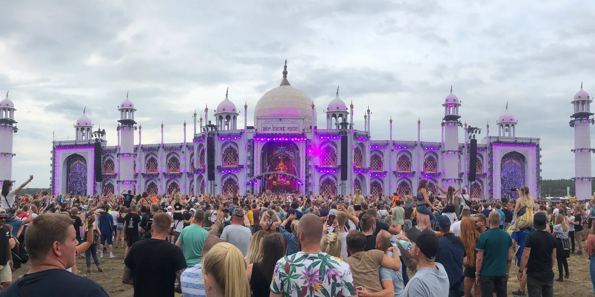
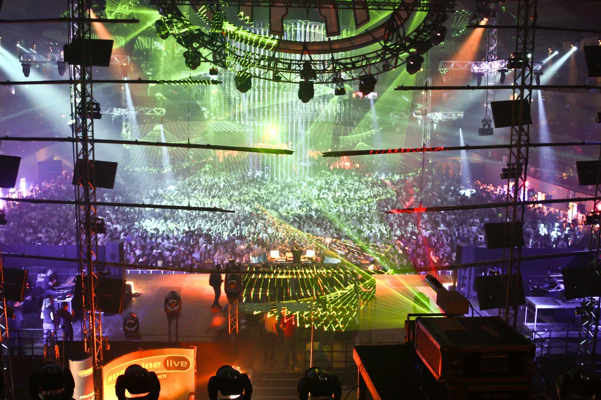
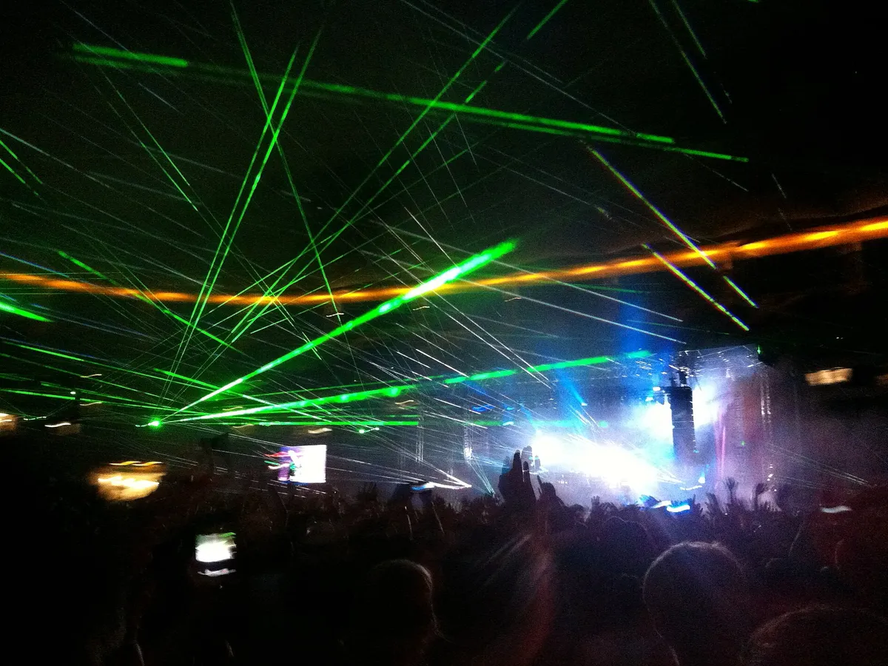
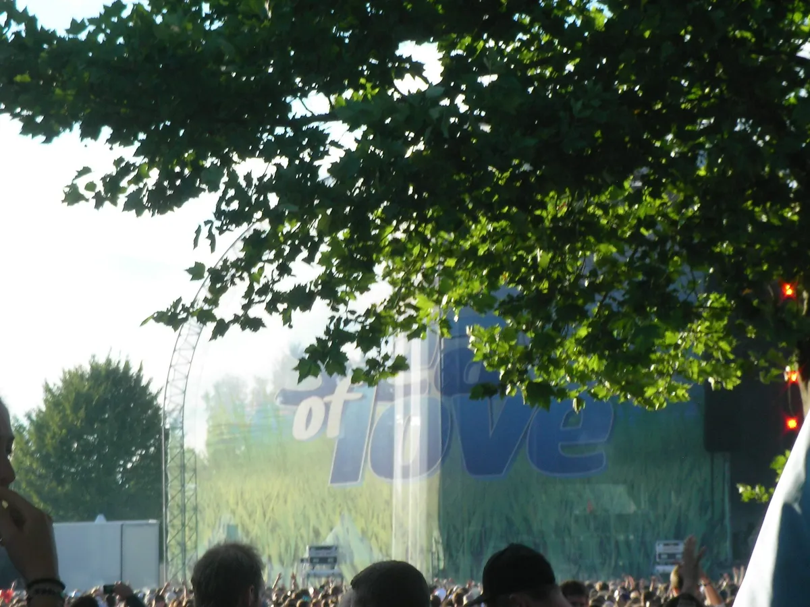

Festival guide, 2027
The best electronic music festivals in Germany in 2027
Germany's techno and EDM festivals compared by size, setting and sound, from an indoor all-nighter in Mannheim to a former missile base in the Hunsrück, with the 2027 dates.
A list meant for choosing.
Germany's electronic festival year starts indoors, with Time Warp in Mannheim in April and MAYDAY in Dortmund on the last night of the month, and moves outside for a crowded July. Nature One ends the run on 1 August, on a former missile base in the Hunsrück.
How this list was chosen.
A festival is on this list when these three things are true:
- Electronic music is the core of the programme.
- It has run recently, and it has either published a 2027 edition or given no sign of stopping.
- It adds something the others lack: a sound, a setting or a size the others lack.
German electronic festival dates for 2027 at a glance.
July is the crowded month. Airbeat One and Stone Techno overlap on 9 to 11 July, and Parookaville and Sea You share 16 to 18 July, so in each pair you have to choose.
| Festival | Where | 2027 dates | Sound | Setting | Best for |
|---|---|---|---|---|---|
| Time Warp | Mannheim | 3 April | Techno, house | Indoor halls | One long night |
| MAYDAY | Dortmund | 30 April | Hard techno | Indoor halls | The eve of May Day |
| World Club Dome | Frankfurt | 4 to 6 June | EDM, house, techno | Football stadium | A city weekend |
| Docklands | Münster | 12 June | House, techno, trance | Open air | A single day |
| Airbeat One | Neustadt-Glewe | 7 to 11 July | EDM, hardstyle, techno | Airfield, camping | A themed main stage |
| Stone Techno | Essen | 9 to 11 July | Techno | Former coal mine | An industrial landmark |
| Parookaville | Airport Weeze | 16 to 18 July | EDM, house, hardstyle | Built town, camping | The biggest crowd |
| Sea You | Freiburg | 16 to 18 July | House, techno, EDM | Lake | The south-west |
| Nature One | Kastellaun | 29 July to 1 August | Techno and beyond | Former missile base, camping | The end of summer |
| SonneMondSterne | Saalburg-Ebersdorf | Not announced (6 to 9 August in 2026) | EDM, techno | Open air | A lakeside weekend |
What is the biggest EDM festival in Germany?
Parookaville calls itself Germany's largest electronic music festival. It reports about 75,000 people on each of its three show days, and 225,000 admissions across them. Nature One says more than 60,000 people over four days. Airbeat One, on an airfield in Mecklenburg-Vorpommern, is the third big camping weekend.
Parookaville, Weeze
Parookaville is built as a town on the grounds of Airport Weeze, near the Dutch border, with its own town hall, passports and stages. It began in 2015 with 40,000 admissions. The 2027 edition is on 16 to 18 July. See the Parookaville guide.
Nature One, Kastellaun
Nature One has run since 1995 on the Raketenbasis Pydna, a former missile base at Kastellaun in the Hunsrück. The 2027 edition is on 29 July to 1 August, for ages 16 and over, with about 20 floors. Its core is techno, and the floors range well beyond it.
Airbeat One, Neustadt-Glewe
Airbeat One is held on the airfield at Neustadt-Glewe in Mecklenburg-Vorpommern, and each year its main stage is built to a new theme. The 2027 edition is on 7 to 11 July and marks 25 years since the first edition in 2002. Its stages range from big-room EDM to hardstyle, techno and psytrance. See the Airbeat One guide.

Which are the best techno festivals in Germany?
Time Warp, MAYDAY and Stone Techno are the three dedicated techno events, and Nature One is the camping choice. For a wider picture, see the best techno festivals in the world, and for the clubs, the best clubs in Berlin.
Time Warp, Mannheim
Time Warp began in 1994 and runs from 19:00 to 14:00, 19 hours, on five floors of the Maimarkthalle in Mannheim. The 2027 edition is on Saturday 3 April. It is a single night and morning indoors, so it fits easily into a weekend. See the Time Warp guide.
This is Honey Dijon presenting Sinister on Floor 2 at Time Warp in 2026, from the festival's own channel.
MAYDAY, Dortmund
MAYDAY goes back to 1991 in Berlin, and it is now held at the Westfalenhallen in Dortmund. The 2027 edition is on 30 April, from 19:00 to 07:00, on four floors of hard techno and its relatives. It falls on the eve of the May Day holiday.

Stone Techno, Essen
Stone Techno is held at Zollverein in Essen, a former coal mine and coke plant that is now a UNESCO World Heritage site. The 2027 edition is on 9 to 11 July. The industrial setting is a large part of the reason to go.
Where are Germany's big EDM festivals?
Beyond Parookaville and Airbeat One, World Club Dome fills a football stadium in Frankfurt and Sea You puts its stages around a lake in Freiburg. For the rest of the continent, see the best electronic music festivals in Europe.
World Club Dome, Frankfurt
World Club Dome is held at Deutsche Bank Park, the Frankfurt football stadium, and the grounds around it. The 2027 edition is on 4 to 6 June. It is a stadium weekend in a city, for ages 16 and over.

Sea You, Freiburg
Sea You has run since 2014 at the Tunisee, a lake on the edge of Freiburg in the south-west, with six stages. The 2027 edition is on 16 to 18 July, for ages 18 and over. It is close to the French and Swiss borders.

Which smaller festivals are worth the trip?
Docklands in June and SonneMondSterne in August are smaller than the festivals above.
Docklands, Münster
Docklands is a one-day open-air festival at Hawerkamp in Münster for about 15,000 people, with house, techno, hard techno and trance. The 2027 edition is on 12 June.
SonneMondSterne, Saalburg-Ebersdorf
SonneMondSterne is held at Saalburg-Ebersdorf, in Thuringia. The 2026 edition was on 6 to 9 August, and the 2027 dates have not been announced.
Not on this list, and why.
These are festivals people ask about that fall outside the tests above.
- Fusion. The organisers call 2027 a Fusion-free year, and the next edition is on 28 June to 2 July 2028.
- Love Parade. It has not run since 2010. Its successor in Berlin, Rave the Planet, is a street parade and not a festival, and it plans its next one for 10 July 2027.
How to choose.
Look at the calendar. Time Warp and MAYDAY are four weeks apart, so you can do both. July has the two clashes shown above.
German electronic music festivals FAQ.
What is the biggest EDM festival in Germany?
Parookaville at Airport Weeze calls itself the largest, with about 75,000 people on each of its three show days. Its 2027 edition is on 16 to 18 July. Nature One, with more than 60,000 people, and Airbeat One are the other big camping festivals.
What are the best techno festivals in Germany?
Time Warp in Mannheim on 3 April 2027, MAYDAY in Dortmund on 30 April, Stone Techno in Essen on 9 to 11 July and Nature One in the Hunsrück on 29 July to 1 August.
Is Fusion Festival happening in 2027?
No. The organisers call 2027 a Fusion-free year, and the next edition is on 28 June to 2 July 2028 in Lärz.
When is Time Warp 2027?
Saturday 3 April 2027, at the Maimarkthalle in Mannheim, from 19:00 to 14:00.
Sources.
- 2027 dates from each festival's own site: Time Warp, MAYDAY, World Club Dome, Docklands, Airbeat One, Stone Techno, Parookaville, Sea You (and its FAQ), Nature One.
- SonneMondSterne: the festival's FAQ.
- Fusion in 2027: Berliner Zeitung.
- Parookaville, Time Warp, Airbeat One, Fusion and the Love Parade: this site's guide to each, linked above, which cites its own sources.
Continue reading
Read next.
 Rave spots~10 min read
Rave spots~10 min readBest Clubs in Berlin: The Legends and the Ones Still Open
The rooms that made Berlin a techno city, the famous clubs that closed, and the best clubs in Berlin that are still open.
Read article → Rave spots~8 min read
Rave spots~8 min readBerghain: Panorama Bar, Sound and Residents
Berghain explained: the former power station, Panorama Bar upstairs, Halle am Berghain, the Kantine, and the Ostgut Ton label.
Read article → Rave spots~6 min read
Rave spots~6 min readBest Clubs in Paris: From Le Palace to Rex Club
Le Palace, Les Bains Douches and Rex Club: the clubs that made Paris nightlife, how each became famous, and the best clubs in Paris open now.
Read article → Rave spots~6 min read
Rave spots~6 min readBest Clubs in Barcelona: From Zeleste to Razzmatazz
Razzmatazz, Nitsa and Macarena Club: how Barcelona's biggest club grew out of a 1970s live venue, and the best clubs in Barcelona open now.
Read article →